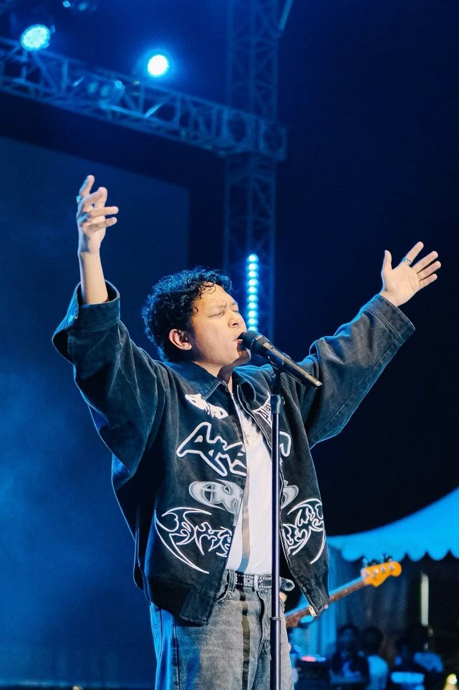

Halo! Selamat datang di blog saya. Saya akan berbagi cerita dan pengalaman disini.
| Nama Asli | Baskara Putra |
|---|---|
| Nama Panggung | Hindia |
| Lahir | 22 Februari 1994 |
| Tempat Lahir | Jakarta, Indonesia |
| Posisi | Penyanyi-Penulis Lagu, Produser Rekaman, Komposer |
| Genre | Alternative rock, Progressive rock, Indie rock, Hard rock, Pop rock |
| Tahun Aktif | 2012-Sekarang |
Diposting pada 1 September 2025
Perjalanan di dunia musik adalah hal yang sangat penting bagi saya. Saya sangat menikmati setiap proses menciptakan karya, tampil diatas panggung, serta merasakan energi dari para pendengar.
Saya juga senang berbagi lagu-lagu rekomendasi, seperti tautan untuk mendengar lagu favorit saya!
Sebuah momen yang paling berkesan bagi saya adalah saat melihat para fans di konser saya. Ini adalah hal yang paling berharga bagi saya.
Seperti yang pernah dikatakan oleh Hindia "Tak apa kalau gagal, karena gagal pun berarti kamu sedang mencoba"
Ini adalah kutipan yang sangat menginspirasi saya dalam musik dan berinteraksi dengan para fans.
Nama panggung
Hindia
Nama Asli
Baskara Putra
Nama Panggung
Hindia
Nama Asli
Baskara Putra
Baskara menyatakan bahwa Hindia adalah proyek favoritnya karena bersifat sangat personal dan bisa dilakukan
"100% suka-suka" tanpa hambatan dari pihak lain.